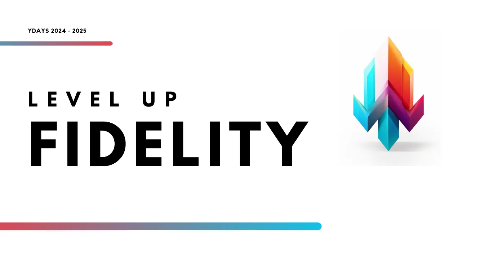

YDAYS › Level Up Fidelity
Level Up Fidelity, un programme de fidélité gamifié pour bar e-sport
Chef de projet d'une équipe de 12 : étude de marché, pricing, plan de communication 360° et tests utilisateurs.

- 12étudiants coordonnés sur 3 pôles
- 15bêta-testeurs interrogés en bar
- 3 000 €de plan média 360° sur 12 mois
Contexte
Level Up Fidelity est une web-app : à chaque commande, le client scanne un QR code, gagne de l'expérience et fait évoluer un personnage qui débloque des avantages réels au bar (réductions, snacks, service prioritaire). Le Hive, un bar e-sport, était notre client bêta-testeur.
Objectif fixé : livrer la stratégie de commercialisation et l'univers complet du jeu avant le 28 mai 2025.
Ce que j'ai fait
- Coordination de trois pôles (marketing, informatique, 3D) en trois phases, avec Notion et Drive pour la documentation partagée et Discord pour les échanges avec le client.
- Étude de marché et positionnement : plus de 43 000 bars en France, 27 bars e-sport, 11,7 millions de fans d'e-sport, aucun concurrent direct sur ce format.
- Objectifs pour le bar : faire passer la rétention de 20 % à 40 %, augmenter le panier moyen de 30 %, gagner 25 points de NPS face à une carte de fidélité classique.
- Modèle économique : deux offres à l'utilisateur actif mensuel avec frais de mise en place, packs de maintenance, version freemium, et une simulation à 26 110 € de revenus annuels pour 11 bars.
- Plan de communication 360° (paid, earned, shared, owned) sur 12 mois avec un budget détaillé de 3 000 €, et une conformité RGPD pensée dès le départ.
- Étude qualitative auprès de 15 joueurs au Hive pour repérer les points de friction de l'app.
Résultats
- Une feuille de route produit tirée des tests : onboarding progressif, navigation simplifiée, barre de progression à la place des points d'action, correction prioritaire d'un bug d'XP.
- Une évolution majeure validée : l'app s'ouvre au fil des niveaux pour garder les nouveaux joueurs.